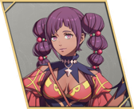

Halvin
- Chinese name
- 哈尔温
- Game8 tier
- B
- Used in
- Path 3: Theodora, Part III: Squad E · Reserve / late joiners
- Personal abilities
- Adaptability, Halt Advance
- Boons
- Bow, Riding
- Banes
- Axe
- Likes
- Growing vegetables, shopping, street performing. cheering crowds
Growth rates
| HP | Str | Mag | Spd | Dex | Def | Res | Lck | Cha |
|---|---|---|---|---|---|---|---|---|
| 35 | 35 | 30 | 45 | 60 | 30 | 25 | 40 | 35 |
Gifts they like
- Loved
- Eastern Black Silk, Eastern Earrings
- Really liked
- Crimson Ghosh, Eastern Tea Leaves, Exquisite Ring, Garum, Gaudy Bangle, Jade Panther Figure, Magic-Trick Set, Potted Vegetables, Simple Pastries, Skin Balm, Village Recipes
Paired ending
Jester — platonic or vague ending. Reach A support and watch the conversation.
Builds
Path 3: Theodora (Hard)
- Hunter Beginner start
ranks: Bow D / Sword D - Archer Specialty Lv20
ranks: Bow C - Forest Knight Advanced Lv35
ranks: Riding D, Bow B
- Joins
- S3/R7 + 10 Dates (NGA says 3 — check in game)
- Role
- Mounted archer
- Train
- Bow to B, Riding to D.
- Gear
- Bows; NGA says an early recruit brings a short bow.
- Level in
- Hunter: Dex 70% · Str 35% · Def 30%
Archer: Dex 70% · Str 40% · Def 35%
Forest Knight: Dex 70% · Str 40% · Def 35% - Master here
- Archer → Crescendo (Hit +3 per kill for the map (max +30)); Forest Knight → Hunter's Eye (Atk +3 on bow follow-ups)
- Farm only
- Sniper → Marksmanship (Hit +15 with a bow); Armored Ornius Rider → Sense Threat (Avo +20 vs foes effective against you)
- Equip order
- Adaptability → Halt Advance → Crescendo → Marksmanship → Hunter's Eye → Bow Lv. 3 at B+ (Hit/Avo +5) → Canto from a bonded mount (Cai route)
- Why
- Game8's line. Part III: Bow Knight.
Part III: Squad E · Reserve / late joiners (Hard)
- Forest Knight Advanced from Theodora's path
ranks: Riding D, Bow B - Bow Knight Master Lv45
ranks: Riding D, Bow A · Kalla's request
- Joins
- Squad E · Reserve / late joiners
- Train
- Bow Knight: Riding D, Bow A
- Gear
- Bows.
- Level in
- Forest Knight: Dex 70% · Str 40% · Def 35%
Bow Knight: Dex 70% · Str 45% · Def 35% - Carried in
- Archer → Crescendo; Sniper → Marksmanship; Armored Ornius Rider → Sense Threat
- Master here
- Forest Knight → Hunter's Eye (Atk +3 on bow follow-ups); Bow Knight → Hunter's Cross (Combat art: Mt +8, Hit +20, Crit +10)
- Equip order
- Adaptability → Halt Advance → Hunter's Cross → Crescendo → Marksmanship → Bowfaire at S+ (Hit/Avo +10, Atk +3) → Canto from a bonded mount (Cai route)
- Why
- Forest Knight carries straight in.